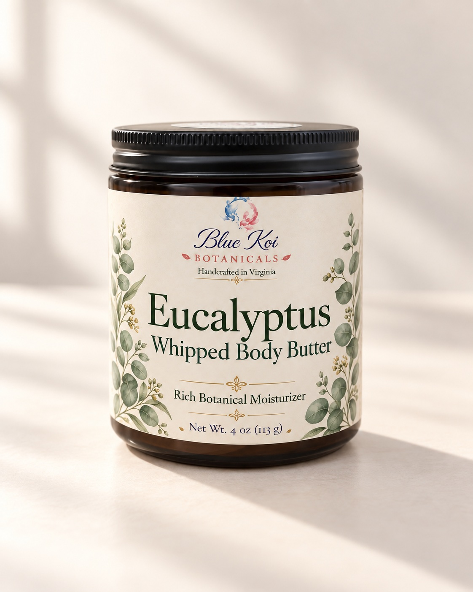

Five scents · 4 oz & 8 oz jars
Whipped Body Butters
Treat dry skin to the rich feel of whipped body butter. Start with a small scoop, warm it in your hands, and take an extra moment over elbows, knees, and other dry spots. Choose warm, floral, fresh, or unscented, with 4 oz and 8 oz jar capacities to suit your routine.

Cedarwood Vanilla Whipped Body Butter
$28Wrap dry skin in a little warmth. This rich whipped butter blends shea and cocoa butters with meadowfoam and jojoba oils, scented with cozy cedarwood and vanilla, soft florals, and a touch of honey fragrance.
Take a closer look
Jasmine Whipped Body Butter
$28Rich moisture with a lush floral finish. Shea and cocoa butters are whipped with meadowfoam and jojoba oils, then scented with jasmine and ylang ylang for an everyday ritual that feels wonderfully indulgent.
Take a closer look
Lavender Whipped Body Butter
$28End the day with soft skin and a familiar favorite. Rich shea and cocoa butters meet meadowfoam and jojoba oils in a whipped blend scented with lavender, ylang ylang, and a gentle hint of honey fragrance.
Take a closer look
Unscented Whipped Body Butter
$28All the richness, with no added fragrance. Shea and cocoa butters are whipped with meadowfoam and jojoba oils to leave dry skin feeling soft, supple, and cared for.
Take a closer look
Eucalyptus Whipped Body Butter
$28A fresh-scented take on a rich daily ritual. Eucalyptus gives this whipped body butter an inviting herbal character, with a creamy texture made for taking a little extra time over dry skin.
Take a closer lookChoose your products here, then see shipping options and tax at checkout.